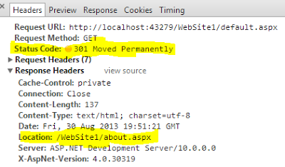
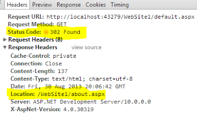

HTTP redirect: 301 (permanent) vs. 302 (temporary)
Is the client supposed to behave differently? How?
Answer
Status 301 means that the resource (page) is moved permanently to a new location. The client/browser should not attempt to request the original location but use the new location from now on.
Status 302 means that the resource is temporarily located somewhere else, and the client/browser should continue requesting the original url.
Suggest
When a search engine spider finds 301 status code in the response header of a webpage, it understands that this webpage no longer exists, it searches for location header in response pick the new URL and replace the indexed URL with the new one and also transfer pagerank.
So search engine refreshes all indexed URL that no longer exist (301 found) with the new URL, this will retain your old webpage traffic, pagerank and divert it to the new one (you will not lose you traffic of old webpage).
Browser: if a browser finds 301 status code then it caches the mapping of the old URL with the new URL, the client/browser will not attempt to request the original location but use the new location from now on unless the cache is cleared.

When a search engine spider finds 302 status for a webpage, it will only redirect temporarily to the new location and crawl both of the pages. The old webpage URL still exists in the search engine database and it always attempts to request the old location and crawl it. The client/browser will still attempt to request the original location.

Read more about how to implement it in asp.net c# and what is the impact on search engines - http://www.dotnetbull.com/2013/08/301-permanent- vs-302-temporary-status-code-aspnet-csharp-Implementation.html